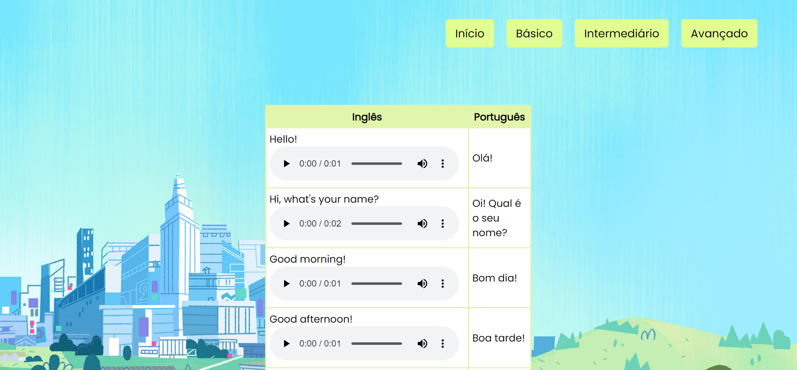
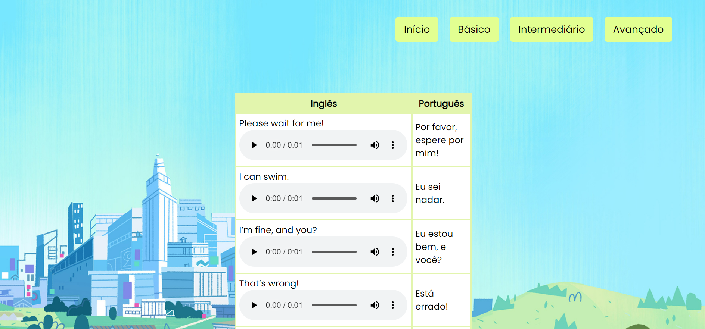
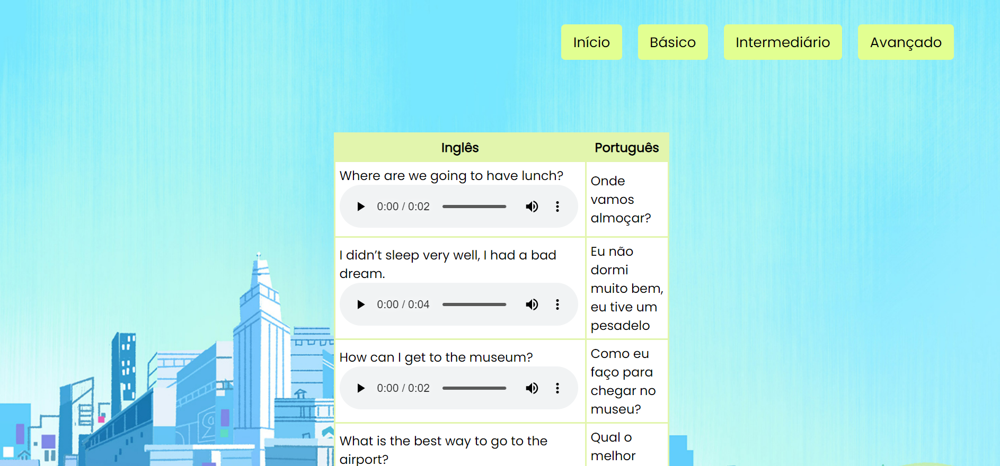
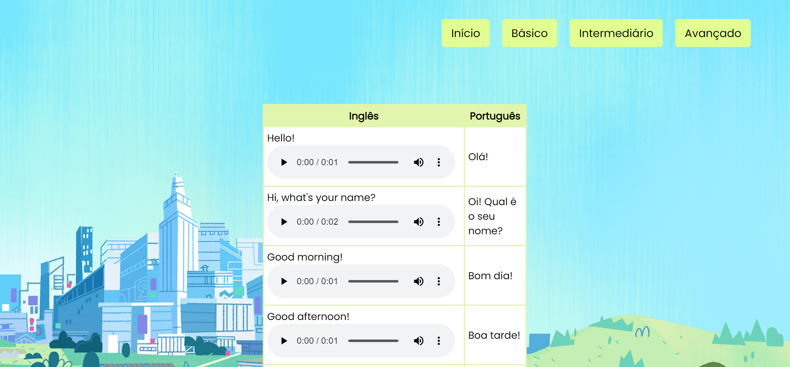
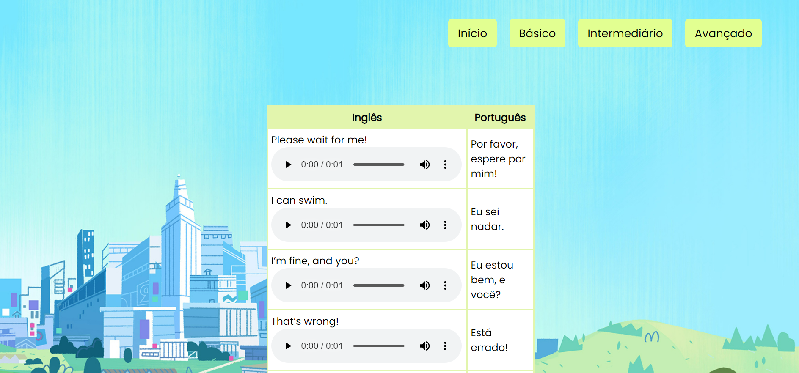
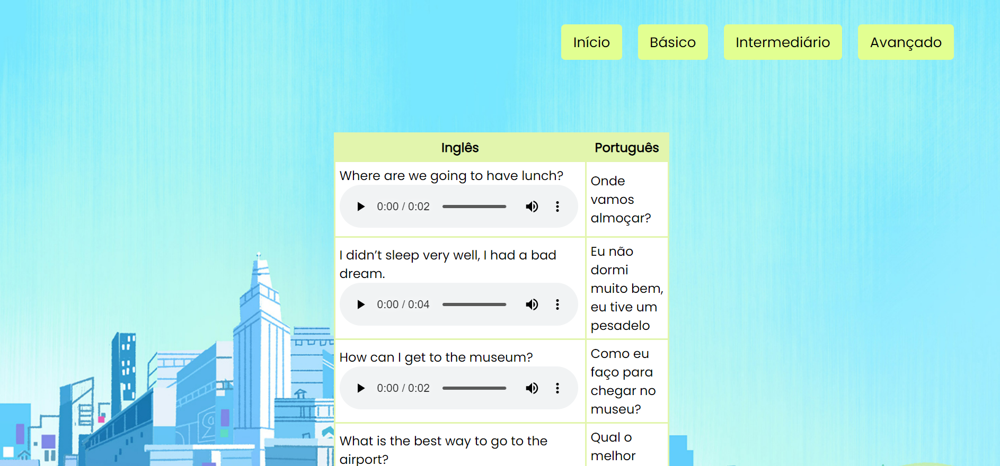

Meu Projeto
Um site perfeito para as crianças mergulharem no mundo da língua inglesa de forma divertida e educativa. Um ambiente seguro e interativo, projetado especialmente para crianças em idade escolar, onde elas podem embarcar em uma jornada emocionante de aprendizado de inglês.
 




